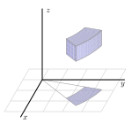
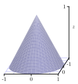
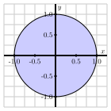
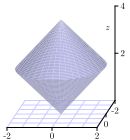
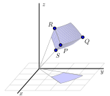
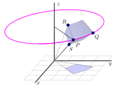
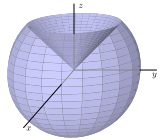

Section12.8Triple Integrals in Cylindrical and Spherical Coordinates
Motivating Questions
What are the cylindrical coordinates of a point, and how are they related to Cartesian coordinates?
What is the volume element in cylindrical coordinates? How does this inform us about evaluating a triple integral as an iterated integral in cylindrical coordinates?
What are the spherical coordinates of a point, and how are they related to Cartesian coordinates?
What is the volume element in spherical coordinates? How does this inform us about evaluating a triple integral as an iterated integral in spherical coordinates?
Just as with rectangular coordinates, where we usually write \(z\) as a function of \(x\) and \(y\) to plot the resulting surface, in cylindrical coordinates, we often express \(z\) as a function of \(r\) and \(\theta\text{.}\) In the following activity, we explore several basic equations in cylindrical coordinates and the corresponding surface each generates.
Activity12.8.1.
In this activity, we graph some surfaces using cylindrical coordinates. To improve your intuition and test your understanding, you should first think about what each graph should look like before you plot it using appropriate technology.
What familiar surface is described by the points in cylindrical coordinates with \(r=2\text{,}\)\(0 \leq \theta \leq 2\pi\text{,}\) and \(0 \leq z \leq 2\text{?}\) How does this example suggest that we call these coordinates cylindrical coordinates? How does your answer change if we restrict \(\theta\) to \(0 \leq \theta \leq \pi\text{?}\)
What familiar surface is described by the points in cylindrical coordinates with \(\theta=2\text{,}\)\(0 \leq r \leq 2\text{,}\) and \(0 \leq z \leq 2\text{?}\)
What familiar surface is described by the points in cylindrical coordinates with \(z=2\text{,}\)\(0 \leq \theta \leq 2\pi\text{,}\) and \(0 \leq r \leq 2\text{?}\)
Plot the graph of the cylindrical equation \(z=r\text{,}\) where \(0 \leq \theta \leq 2\pi\) and \(0 \leq r \leq 2\text{.}\) What familiar surface results?
Plot the graph of the cylindrical equation \(z= \theta\) for \(0 \leq \theta \leq 4 \pi\text{.}\) What does this surface look like?
As the name and Activity 12.8.1 suggests, cylindrical coordinates are useful for describing surfaces that are cylindrical in nature.
Subsection12.8.1Triple Integrals in Cylindrical Coordinates
To evaluate a triple integral \(\iiint_S f(x,y,z) \, dV\) as an iterated integral in Cartesian coordinates, we use the fact that the volume element \(dV\) is equal to \(dz \, dy \, dx\) (which corresponds to the volume of a small box). To evaluate a triple integral in cylindrical coordinates, we similarly must understand the volume element \(dV\) in cylindrical coordinates.
Activity12.8.2.
A picture of a cylindrical box, \(B = \{(r,\theta,z) : r_1 \leq r \leq r_2, \theta_1 \leq \theta \leq \theta_2, z_1 \leq z \leq z_2\},\) is shown in Figure 12.8.1. Let \(\Delta r = r_2-r_1\text{,}\)\(\Delta \theta = \theta_2 - \theta_1\text{,}\) and \(\Delta z = z_2-z_1\text{.}\) We want to determine the volume \(\Delta V\) of \(B\) in terms of \(\Delta r\text{,}\)\(\Delta \theta\text{,}\)\(\Delta z\text{,}\)\(r\text{,}\)\(\theta\text{,}\) and \(z\text{.}\)

Figure12.8.1.A cylindrical box.
Appropriately label \(\Delta r\text{,}\)\(\Delta \theta\text{,}\) and \(\Delta z\) in Figure 12.8.1.
Let \(\Delta A\) be the area of the projection of the box, \(B\text{,}\) onto the \(xy\)-plane, which is shaded blue in Figure 12.8.1. Recall that we previously determined the area \(\Delta A\) in polar coordinates in terms of \(r\text{,}\)\(\Delta r\text{,}\) and \(\Delta \theta\text{.}\) In light of the fact that we know \(\Delta A\) and that \(z\) is the standard \(z\) coordinate from Cartesian coordinates, what is the volume \(\Delta V\) in cylindrical coordinates?
Activity 12.8.2 demonstrates that the volume element \(dV\) in cylindrical coordinates is given by \(dV = r \, dz \, dr \, d\theta\text{,}\) and hence the following rule holds in general.
Triple integrals in cylindrical coordinates.
Given a continuous function \(f = f(x,y,z)\) over a region \(S\) in \(\R^3\text{,}\)
\begin{equation*}
\iiint_S f(x,y,z) \, dV = \iiint_S f(r\cos(\theta), r\sin(\theta), z) \, r \, dz \, dr \, d\theta.
\end{equation*}
The latter expression is an iterated integral in cylindrical coordinates.
Of course, to complete the task of writing an iterated integral in cylindrical coordinates, we need to determine the limits on the three integrals: \(\theta\text{,}\)\(r\text{,}\) and \(z\text{.}\) In the following activity, we explore how to do this in several situations where cylindrical coordinates are natural and advantageous.
Activity12.8.3.
In this activity we work with triple integrals in cylindrical coordinates.
Let \(S\) be the solid bounded above by the graph of \(z = x^2+y^2\) and below by \(z=0\) on the unit disk in the \(xy\)-plane.
The projection of the solid \(S\) onto the \(xy\)-plane is a disk. Describe this disk using polar coordinates.
Now describe the surfaces bounding the solid \(S\) using cylindrical coordinates.
Determine an iterated triple integral expression in cylindrical coordinates that gives the volume of \(S\text{.}\) You do not need to evaluate this integral.
Suppose the density of the cone defined by \(r = 1 - z\text{,}\) with \(z \geq 0\text{,}\) is given by \(\delta(r, \theta, z) = z\text{.}\) A picture of the cone is shown at left in Figure 12.8.2, and the projection of the cone onto the \(xy\)-plane in given at right in Figure 12.8.2. Set up an iterated integral in cylindrical coordinates that gives the mass of the cone. You do not need to evaluate this integral.


Figure12.8.2.The cylindrical cone \(r = 1-z\) and its projection onto the \(xy\)-plane.
Determine an iterated integral expression in cylindrical coordinates whose value is the volume of the solid bounded below by the cone \(z = \sqrt{x^2+y^2}\) and above by the cone \(z = 4 - \sqrt{x^2+y^2}\text{.}\) A picture is shown in Figure 12.8.3. You do not need to evaluate this integral.

Figure12.8.3.A solid bounded by the cones \(z = \sqrt{x^2+y^2}\) and \(z = 4 - \sqrt{x^2+y^2}\text{.}\)
Subsection12.8.2Spherical Coordinates
When it comes to thinking about particular surfaces in spherical coordinates, similar to our work with cylindrical and Cartesian coordinates, we usually write \(\rho\) as a function of \(\theta\) and \(\phi\text{;}\) this is a natural analog to polar coordinates, where we often think of our distance from the origin in the plane as being a function of \(\theta\text{.}\) In spherical coordinates, we likewise often view \(\rho\) as a function of \(\theta\) and \(\phi\text{,}\) thus viewing distance from the origin as a function of two key angles.
In the following activity, we explore several basic equations in spherical coordinates and the surfaces they generate.
Activity12.8.4.
In this activity, we graph some surfaces using spherical coordinates. To improve your intuition and test your understanding, you should first think about what each graph should look like before you plot it using appropriate technology.
What familiar surface is described by the points in spherical coordinates with \(\rho = 1\text{,}\)\(0 \leq \theta \leq 2\pi\text{,}\) and \(0 \leq \phi \leq \pi\text{?}\) How does this particular example demonstrate the reason for the name of this coordinate system? What if we restrict \(\phi\) to \(0 \leq \phi \leq \frac{\pi}{2}\text{?}\)
What familiar surface is described by the points in spherical coordinates with \(\phi = \frac{\pi}{3}\text{,}\)\(0 \leq \rho \leq 1\text{,}\) and \(0 \leq \theta \leq 2\pi\text{?}\)
What familiar shape is described by the points in spherical coordinates with \(\theta = \frac{\pi}{6}\text{,}\)\(0 \leq \rho \leq 1\text{,}\) and \(0 \leq \phi \leq \pi\text{?}\)
Plot the graph of \(\rho = \theta\text{,}\) for \(0 \leq \phi \leq \pi\) and \(0 \leq \theta \leq 2 \pi\text{.}\) How does the resulting surface appear?
As the name and Activity 12.8.4 indicate, spherical coordinates are particularly useful for describing surfaces that are spherical in nature; they are also convenient for working with certain conical surfaces.
Subsection12.8.3Triple Integrals in Spherical Coordinates
As with rectangular and cylindrical coordinates, a triple integral \(\iiint_S f(x,y,z) \, dV\) in spherical coordinates can be evaluated as an iterated integral once we understand the volume element \(dV\text{.}\)
Activity12.8.5.
To find the volume element \(dV\) in spherical coordinates, we need to understand how to determine the volume of a spherical box of the form \(\rho_1 \leq \rho \leq \rho_2\) (with \(\Delta \rho = \rho_2-\rho_1)\text{,}\)\(\phi_1 \leq \phi \leq \phi_2\) (with \(\Delta \phi = \phi_2-\phi_1\)), and \(\theta_1 \leq \theta \leq \theta_2\) (with \(\Delta \theta = \theta_2-\theta_1\)). An illustration of such a box is given at left in Figure 12.8.4. This spherical box is a bit more complicated than the cylindrical box we encountered earlier. In this situation, it is easier to approximate the volume \(\Delta V\) than to compute it directly. Here we can approximate the volume \(\Delta V\) of this spherical box with the volume of a Cartesian box whose sides have the lengths of the sides of this spherical box. In other words,
\begin{equation*}
\Delta V \approx |PS| \ |\overset{\frown}{PR}| \ |\overset{\frown}{PQ}|,
\end{equation*}
where \(|\overset{\frown}{PR}|\) denotes the length of the circular arc from \(P\) to \(R\text{.}\)


Figure12.8.4.Left: A spherical box. Right: A spherical volume element.
What is the length \(|PS|\) in terms of \(\rho\text{?}\)
What is the length of the arc \(\overset{\frown}{PR}\text{?}\) (Hint: The arc \(\overset{\frown}{PR}\) is an arc of a circle of radius \(\rho_2\text{,}\) and arc length along a circle is the product of the angle measure (in radians) and the circle’s radius.)
What is the length of the arc \(\overset{\frown}{PQ}\text{?}\) (Hint: The arc \(\overset{\frown}{PQ}\) lies on a horizontal circle as illustrated at right in Figure 12.8.4. What is the radius of this circle?)
Use your work in (a), (b), and (c) to determine an approximation for \(\Delta V\) in spherical coordinates.
Letting \(\Delta \rho\text{,}\)\(\Delta \theta\text{,}\) and \(\Delta \phi\) go to 0, it follows from the final result in Activity 12.8.5 that \(dV = \rho^2 \, \sin(\phi) \, d\rho \, d\theta \, d\phi \) in spherical coordinates, and thus allows us to state the following general rule.
Triple integrals in spherical coordinates.
Given a continuous function \(f = f(x,y,z)\) over a region \(S\) in \(\R^3\text{,}\) the triple integral \(\iiint_S f(x,y,z) \, dV\) is converted to the integral
The latter expression is an iterated integral in spherical coordinates.
Finally, in order to actually evaluate an iterated integral in spherical coordinates, we must of course determine the limits of integration in \(\phi\text{,}\)\(\theta\text{,}\) and \(\rho\text{.}\) The process is similar to our earlier work in the other two coordinate systems.
Activity12.8.6.
We can use spherical coordinates to help us more easily understand some natural geometric objects.
Recall that the sphere of radius \(a\) has spherical equation \(\rho = a\text{.}\) Set up and evaluate an iterated integral in spherical coordinates to determine the volume of a sphere of radius \(a\text{.}\)
Set up, but do not evaluate, an iterated integral expression in spherical coordinates whose value is the mass of the solid obtained by removing the cone \(\phi=\frac{\pi}{4}\) from the sphere \(\rho = 2\) if the density \(\delta\) at the point \((x,y,z)\) is \(\delta(x,y,z) = \sqrt{x^2+y^2+z^2}\text{.}\) An illustration of the solid is shown in Figure 12.8.5.

Figure12.8.5.The solid cut from the sphere \(\rho = 2\) by the cone \(\phi=\frac{\pi}{4}\text{.}\)
Subsection12.8.4Summary
The cylindrical coordinates of a point \(P\) are \((r,\theta,z)\) where \(r\) is the distance from the origin to the projection of \(P\) onto the \(xy\)-plane, \(\theta\) is the angle that the projection of \(P\) onto the \(xy\)-plane makes with the positive \(x\)-axis, and \(z\) is the vertical distance from \(P\) to the projection of \(P\) onto the \(xy\)-plane. When \(P\) has rectangular coordinates \((x,y,z)\text{,}\) it follows that its cylindrical coordinates are given by
When \(P\) has given cylindrical coordinates \((r,\theta,z)\text{,}\) its rectangular coordinates are
\begin{equation*}
x = r \cos(\theta), \ \ \ \ \ y = r \sin(\theta), \ \ \ \ \ z = z.
\end{equation*}
The volume element \(dV\) in cylindrical coordinates is \(dV = r \, dz \, dr \, d\theta\text{.}\) Hence, a triple integral \(\iiint_S f(x,y,z) \, dA\) can be evaluated as the iterated integral
\begin{equation*}
\iiint_S f(r\cos(\theta), r\sin(\theta), z) \, r \, dz \, dr \, d\theta.
\end{equation*}
The spherical coordinates of a point \(P\) in 3-space are \(\rho\) (rho), \(\theta\text{,}\) and \(\phi\) (phi), where \(\rho\) is the distance from \(P\) to the origin, \(\theta\) is the angle that the projection of \(P\) onto the \(xy\)-plane makes with the positive \(x\)-axis, and \(\phi\) is the angle between the positive \(z\) axis and the vector from the origin to \(P\text{.}\) When \(P\) has Cartesian coordinates \((x,y,z)\text{,}\) the spherical coordinates are given by
Given the point \(P\) in spherical coordinates \((\rho, \phi, \theta)\text{,}\) its rectangular coordinates are
\begin{equation*}
x = \rho \sin(\phi) \cos(\theta), \ \ \ \ \ y = \rho \sin(\phi) \sin(\theta), \ \ \ \ \ z = \rho \cos(\phi).
\end{equation*}
The volume element \(dV\) in spherical coordinates is \(dV = \rho^2 \sin(\phi) \, d\rho \, d\theta \, d\phi\text{.}\) Thus, a triple integral \(\iiint_S f(x,y,z) \, dA\) can be evaluated as the iterated integral
Match the given equation with the verbal description of the surface:
Half plane
Elliptic or Circular Paraboloid
Cone
Sphere
Circular Cylinder
Plane
\(\displaystyle r =4\)
\(\displaystyle \rho \cos(\phi )= 4\)
\(\displaystyle z = r^2\)
\(\displaystyle \rho = 4\)
\(\displaystyle \rho = 2\cos(\phi )\)
\(\displaystyle r = 2\cos(\theta )\)
\(\displaystyle \theta = \frac{\pi}{3}\)
\(\displaystyle r^2 + z^2 =16\)
\(\displaystyle \phi = \frac{\pi}{3}\)
2.
Match the integrals with the type of coordinates which make them the easiest to do. Put the letter of the coordinate system to the left of the number of the integral.
\(\displaystyle \int \!\! \int_D \ \frac{1}{x^2+y^2} \ dA\) where D is: \(x^2+y^2 \leq 4\)
\(\displaystyle \int \!\! \int \!\! \int_E \ z^2 \ dV\) where E is: \(-2 \leq z \leq 2, \ \ 1 \leq
x^2+y^2 \leq 2\)
\(\displaystyle \int \!\! \int \!\! \int_E \ z \ dV\) where E is: \(1 \leq x \leq 2, \ \ 3 \leq y \leq
4, \ \ 5 \leq z \leq 6\)
Use cylindrical coordinates to evaluate the triple integral \(\displaystyle \int \!\! \int \!\!
\int_{\mathbf{E}} \, \sqrt{x^{2} + y^{2}} \, dV\text{,}\) where E is the solid bounded by the circular paraboloid \(z = 4 - 9 \left( x^{2} + y^{2}
\right)\) and the \(xy\) -plane.
5.
Use spherical coordinates to evaluate the triple integral \(\displaystyle \int \!\! \int \!\!
\int_{\mathbf{E}} \, x^{2} + y^{2} + z^{2} \, dV\text{,}\) where E is the ball: \(x^{2} + y^{2} + z^{2} \leq 49\text{.}\)
6.
Find the volume of the solid enclosed by the paraboloids \(z = 16 \left(
x^{2} + y^{2} \right)\) and \(z = 18 - 16 \left( x^{2} + y^{2}
\right)\text{.}\)
7.
FInd the volume of the ellipsoid \(x^2 + y^2 + 10 z^2 = 25\text{.}\)
8.
The density, \(\delta\text{,}\) of the cylinder \(x^2+y^2\le 1\text{,}\)\(0\le z\le 5\) varies with the distance, \(r\text{,}\) from the \(z\)-axis:
Suppose \(\displaystyle f(x,y,z) = \frac{1}{\sqrt{x^2+y^2+z^2}}\) and \(W\) is the bottom half of a sphere of radius \(2\text{.}\) Enter \(\rho\) as rho,\(\phi\) as phi, and \(\theta\) as theta.
(a) As an iterated integral,
\(\displaystyle
\iiint\limits_{W} f \, dV
=
\int_A^B \!\! \int_C^D \!\! \int_E^F\)\(d\rho \, d\phi \, d\theta\)
with limits of integration
A =
B =
C =
D =
E =
F =
(b) Evaluate the integral.
10.
In each of the following questions, set up an iterated integral expression whose value determines the desired result. Then, evaluate the integral first by hand, and then using appropriate technology.
Find the volume of the “cap” cut from the solid sphere \(x^2 + y^2 + z^2 = 4\) by the plane \(z=1\text{,}\) as well as the \(z\)-coordinate of its centroid.
Find the \(x\)-coordinate of the center of mass of the portion of the unit sphere that lies in the first octant (i.e., where \(x\text{,}\)\(y\text{,}\) and \(z\) are all nonnegative). Assume that the density of the solid given by \(\delta(x,y,z) = \frac{1}{1+x^2+y^2+z^2}\text{.}\)
Find the volume of the solid bounded below by the \(xy\)-plane, on the sides by the sphere \(\rho=2\text{,}\) and above by the cone \(\phi = \pi/3\text{.}\)
Find the \(z\) coordinate of the center of mass of the region that is bounded above by the surface \(z = \sqrt{\sqrt{x^2 + y^2}}\text{,}\) on the sides by the cylinder \(x^2 + y^2 = 4\text{,}\) and below by the \(xy\)-plane. Assume that the density of the solid is uniform and constant.
Find the volume of the solid that lies outside the sphere \(x^2 + y^2 + z^2 = 1\) and inside the sphere \(x^2 + y^2 + z^2 = 2z\text{.}\)
11.
For each of the following questions,
sketch the region of integration,
change the coordinate system in which the iterated integral is written to one of the remaining two,
evaluate the iterated integral you deem easiest to evaluate by hand.
Consider the solid region \(S\) bounded above by the paraboloid \(z = 16 - x^2 - y^2\) and below by the paraboloid \(z = 3x^2 + 3y^2\text{.}\)
Describe parametrically the curve in \(\R^3\) in which these two surfaces intersect.
In terms of \(x\) and \(y\text{,}\) write an equation to describe the projection of the curve onto the \(xy\)-plane.
What coordinate system do you think is most natural for an iterated integral that gives the volume of the solid?
Set up, but do not evaluate, an iterated integral expression whose value is average \(z\)-value of points in the solid region \(S\text{.}\)
Use technology to plot the two surfaces and evaluate the integral in (c). Write at least one sentence to discuss how your computations align with your intuition about where the average \(z\)-value of the solid should fall.